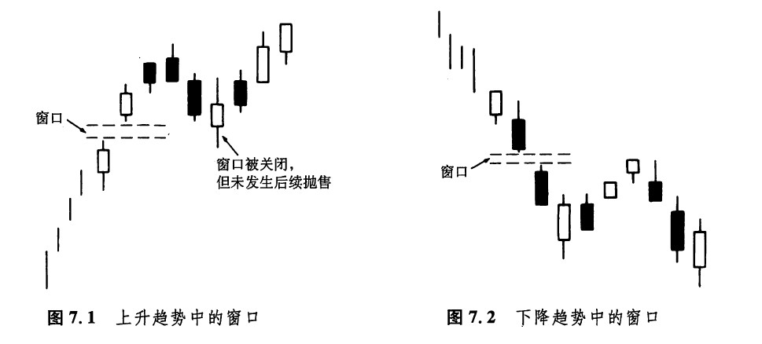
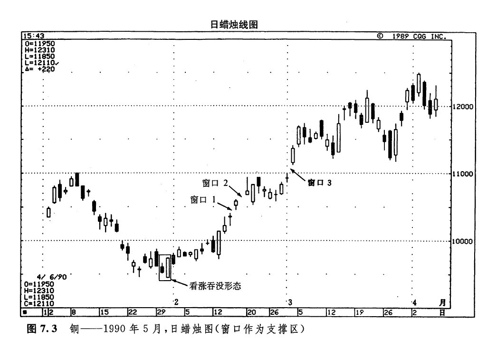
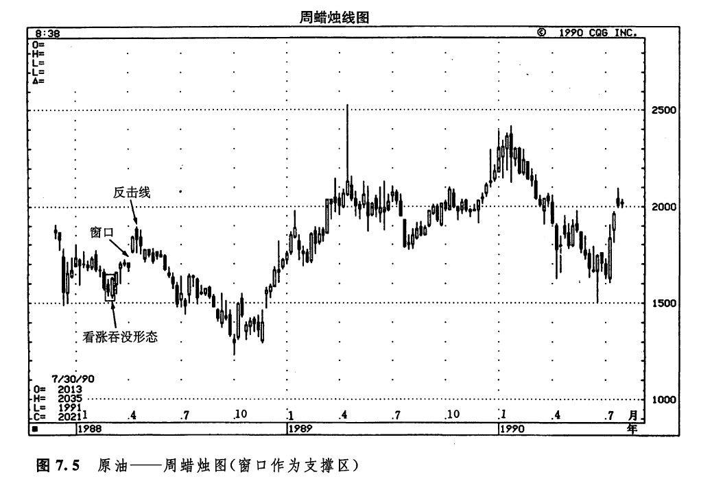
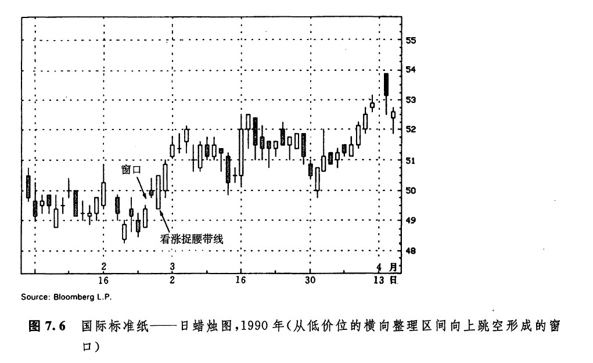
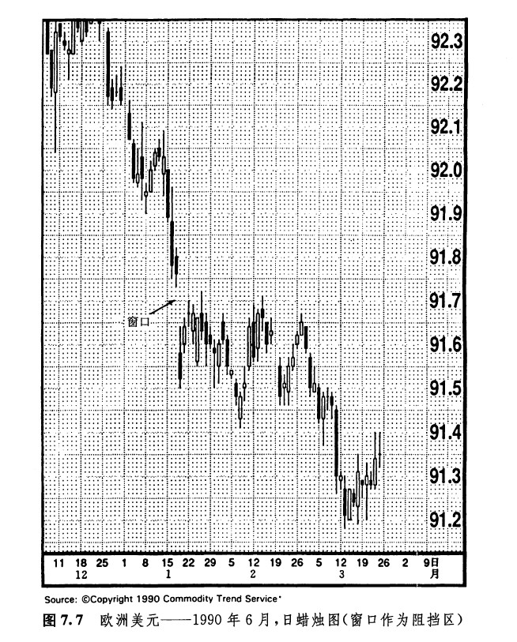
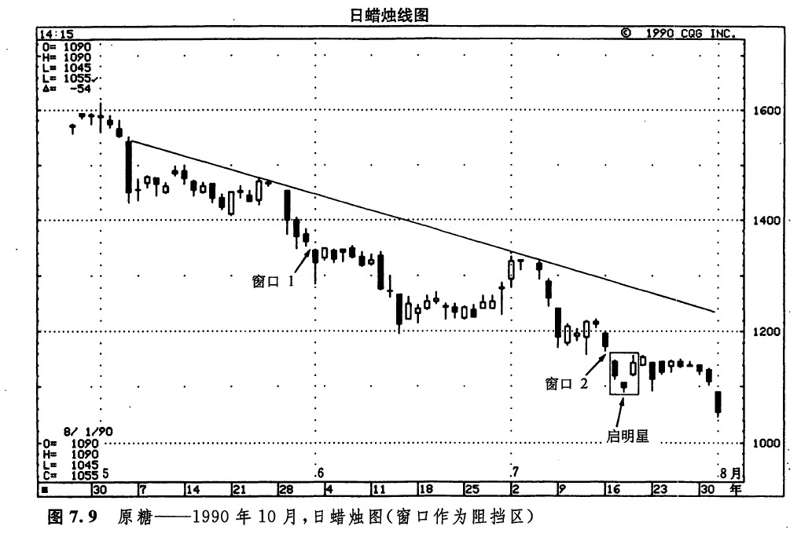
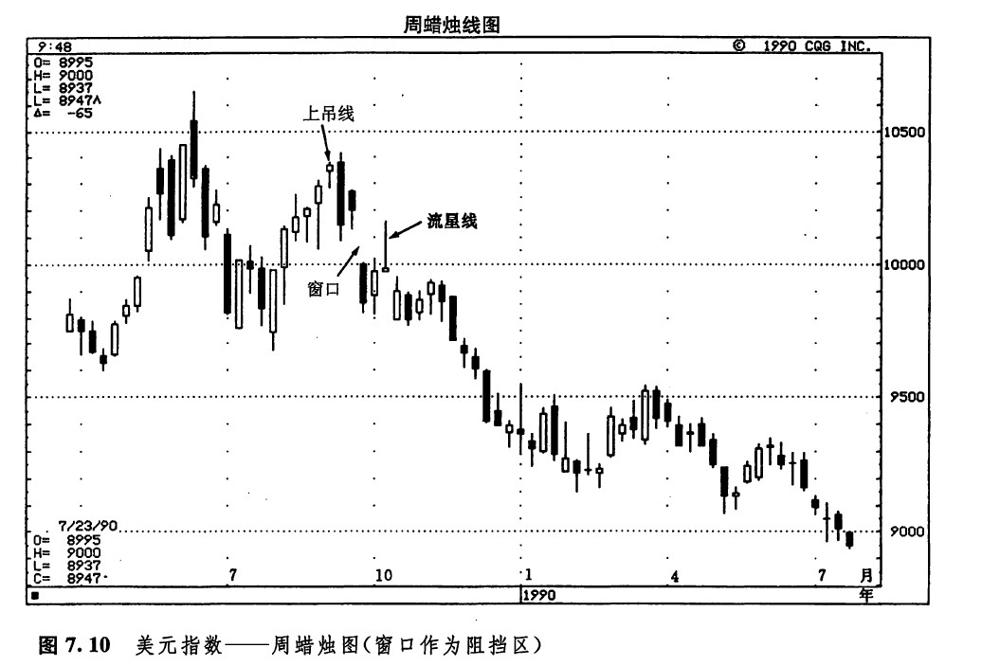
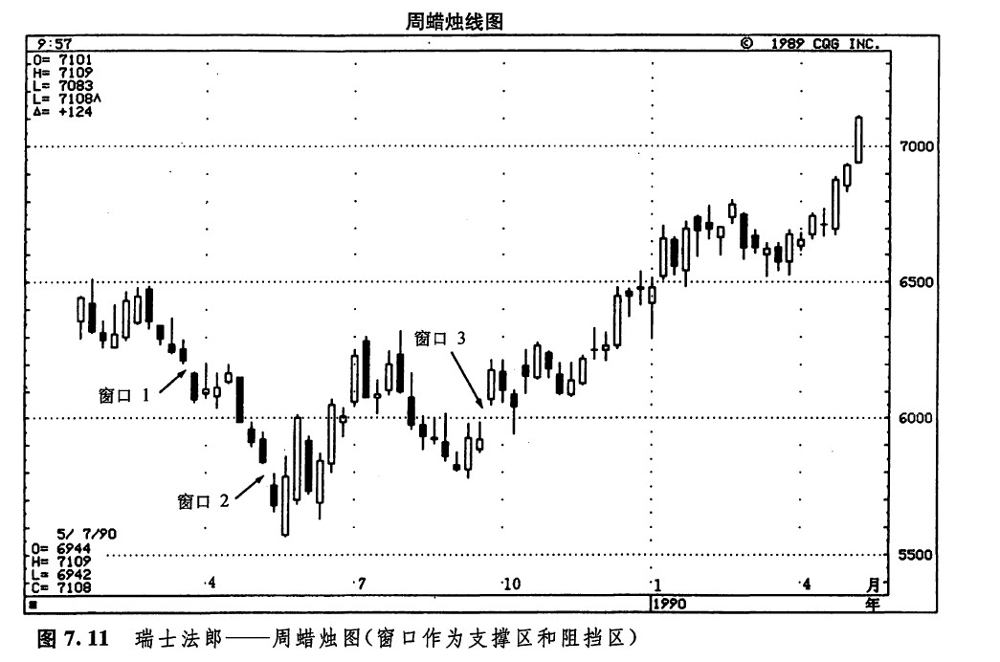
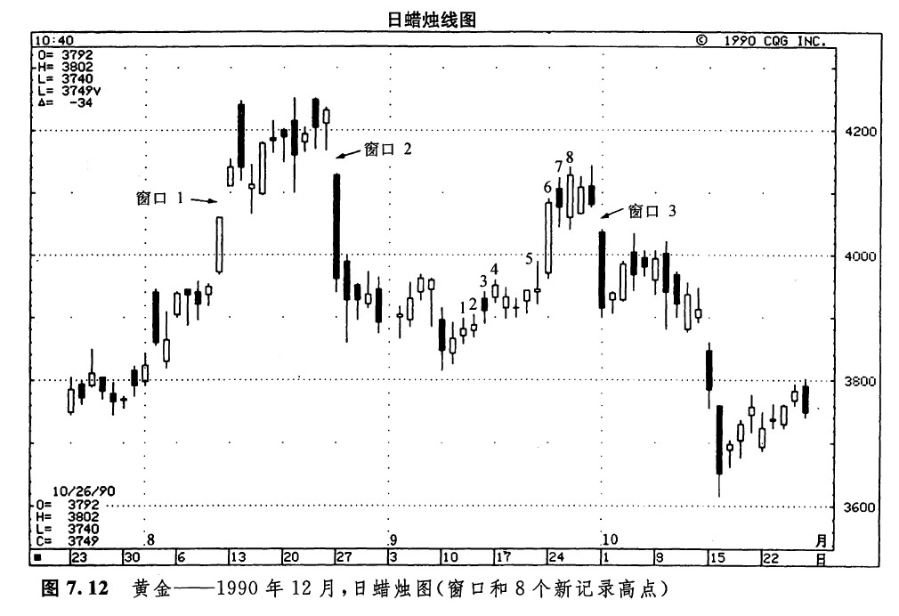
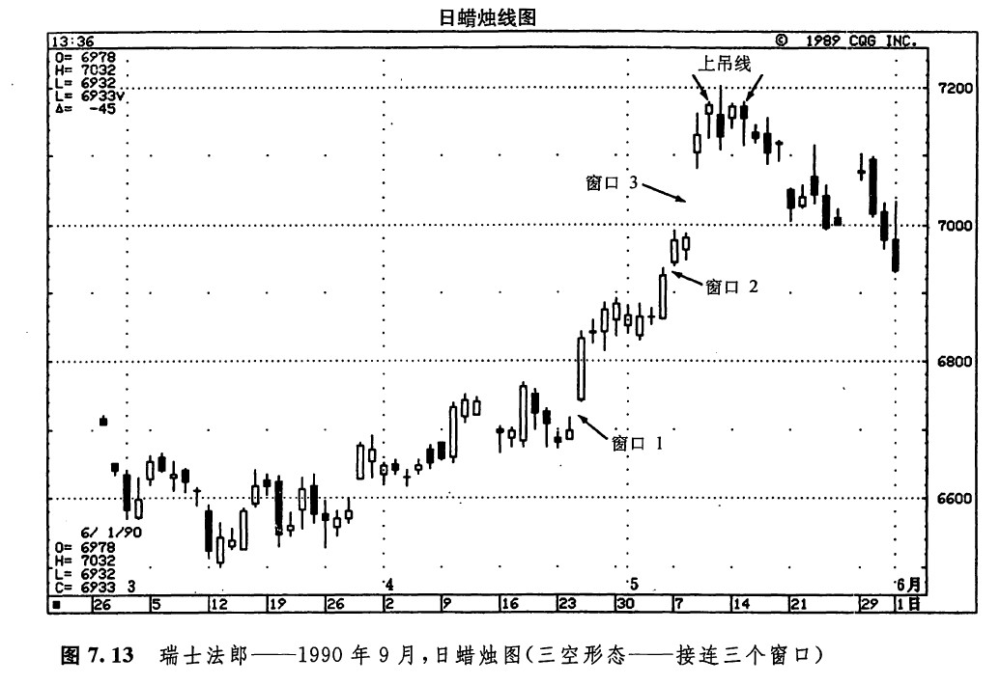

窗口
我们曾有过介绍，日本技术分析师一般把价格跳空称为窗口。按照西方的表达方式，我们说“回填跳空”；在日本，人们则说：“关上窗口。”这一部分，我们先来阐述窗口的基本概念，然后还要探讨包含窗口（价格跳空）的其他一些形态。在这样的蜡烛图形态中，跳空包括并列黑白线、跳空突破形态，以及跳空并列白色蜡烛线。
所谓窗口，是指在前一根蜡烛线的端点与后一根蜡烛线的端点之间存在着一个价格缺口。如图7.1所示，是在上升趋势中形成的一个“打开的”窗口。在图示的前一根蜡烛线的上影线与后一根蜡烛线的下影线之间，存在一段价格缺口。如图7.2所示，是下降趋势中的一个窗口。从中可以看到，在前一天的下影线和当日的上影线之间，未曾发生任何价格活动。根据日本技术分析师的观点，市场参与者应当顺着窗口形成的方向建立头寸。同时，窗口还将演化为支撑区或阻挡区。因此，在上涨行情中，如果出现了一个窗口，则意味着价格将进一步上升。并且，今后当市场向下回撤时，这个窗口将形成其底部支撑水平。如果市场在向下回撒时关闭了这个窗口，并且在窗口关闭后，市场的抛售压力依然存在，那么，先前的上升趋势就不复成立了。类似地，在下跌的价格环境中，如果出现了一个窗口，则意味着市场环将进一步下降。此后形成的任何向上价格反弹，都会在这个窗口处遭遇阻挡。如果该窗口被关闭，并且在窗口关闭后，上涨行情继续发展，那么，原来的下降趋势就完结了。

传统的日本技术分析理论（也就是蜡烛图技术）确信，当一个窗口形成后，如果市场开始调整，那么，价格将回到该窗口处。换言之，市场很可能回头试探一个打开的窗口。因此，在上升趋势中，我们可以把窗口看作买进的参考点，乘市场回撒到这里时人市。另一方面，如果在窗口关闭后，市场的抛售压力仍然不消退的话，那么，就应当把多头头寸平仓出清，甚而可以考虑建立空头头寸。如果在下降趋势中出现了一个窗口，就应当采取与上述相反的对策。

在图7.3中我们看到，自图示的看涨吞没形态开始，市场形成了一轮上涨行情，在其演进过程中，出现了窗口1和窗口2。在窗口2之后，市场上“掉下”了一颗流星。在流星线的下一个交易日里，市场以较低的价格开市，关闭了这个窗口（也就是说，填回了这个价格跳空）。请记住如下概念：窗口之后发生的市场回撤，将重新返回窗口。从这一点来看，在本例中市场向下回落到该窗口处，正是意料中事。如果在这个窗口被关闭以后，市场的抛售压力仍然持续着，那就标志着上升趋势已经终结了。不过，这里并未形成这样的局面。一旦该窗口被关闭，市场的抛售压力就消解了。另外，市场在窗口1所形成的支撑区维持得很好。在2月20日所在的一个星期中，市场越起不前。后来，市场曾再度向下试探窗口2处的支撑水平。这次试探又成功了，于是市场返身向上推进，打开了窗口3。这个窗口的意义非同一般，因为它标志着市场以跳空形式向上突破了1.10美元的重要阻挡水平。1.10美元的价格水平，过去曾经构成了一个阻挡区域，现在被向上突破了，应当转变为一个支撑区。这里一方面受到上述支撑作用，另一方面还受到由窗口3构成的支撑作用，因此，我们有两方面的理由来预期1.10美元将提供坚实的底部支撑。后来，在整个3月，该区域的确为牛方提供了一个扎扎实实的立足点。
日本人相信，从横向整固区间中跳起的窗口，以及从新高价位上跳起的窗口，值得特别注意。请看图7.4。3月初的窗口向上突破了0.15美元的水平，这是市场对为期3个月的横向调整区间的重要突破。于是，0.15美元附近的这个窗口就具备了双重的支撑作用。这种支撑作用首先来自该窗口本身，其次，因为这里过去是阻挡区，现在已经转化为支撑区了。请注意，在随后的几个月中，这个窗口为市场提供了有力的支撑。4月2日和3日组成了一个孕线形态。这一形态表明，先前的趋势（在本例中，为下降趋势）已经超尽了能量。数日后，市场又形成了一个看涨吞没形态。4月16日，出现了一根倒锤子线。上述这些看涨信号统统发生在本窗口所在的0.15美元的水平附近。

如图7.5所示，1988年3月，一个看涨吞没形态预示着上冲行情的到来。在这轮上冲行情中，市场打开了一个窗口。之后，上涨行情继续发展，直至图示的看跌反击线形态出现。后来，该窗口维持了5个星期的支撑作用，但是在窗口关闭后，抛售压力依然如此，因此上升趋势宣告破产。

到此为止，我们一直把窗口看作一种持续形态，研究的焦点是，怎样利用窗口作为支撑区域或阻挡区域。窗口还有其他用途（参见图7.6）。一个窗口，可能构成一个极有意义的向上突破信号，特别是当这个窗口是从较低的横向整理区间向上跳起，而且形成窗口的是一根小的黑色蜡烛线的时候。如图7.6所示的实例正体现了上述原则。在这个例子中，市场在整个2月里的价格活动，都局限在一个相对狭小的横向整理区间内。2月24日和25日，市场形成了一个向上的小窗口，而且形成窗口的是一根非常小的黑色蜡烛线。次日的交易过程证实了这个窗口的支撑作用。就在这一天（2月26日），市场不仅坚守住了本窗口形成的支撑区，而且产生了一根属于最坚挺类型的蜡烛线——一根长长的白色蜡烛线，其开市价位于当日最低点（这就是说，是一根看涨捉腰带线），其收市价位于当日最高点（全秃大阳线）。

如图7.7所示，1月中旬出现了一个大窗口。从1月底到2月底，市场一再地向上回升到这个窗口附近（窗口之后发生的市场回撤，将重新返回窗口）。但是，在每一次向上反弹过程中，只要价格接近了由该窗口形成的阻挡水平，上涨行情就短路了。

请看如图7.8所示的道·琼斯指数的实例。在“87股市大崩溃”中，该市场在2150点到2200点之间形成了一个窗口。那么，这场下跌趋势何时才算到头了呢？需要满足两个条件：第一，市场必须把这个巨大的窗口向上关闭掉；第二，在窗口关闭后，市场上的买进压力依然如故。到1989年初，上述两个条件都实现了。

如图7.9所示，是另一个说明窗口形成阻挡区域的实例。窗口1发生在5月下旬，是个较小的窗口。这个窗口的出现，意味着当前下跌行情将继续发展。在之后的数周内，这个窗口也演变成了一个阻挡区域。讲到窗口2的时候，我们就有机会强调趋势的重要性了。下面这句话常常挂在房地产经纪人的嘴边：“对房地产最有影响力的三项因素是：地点、地点、地点。”如果我们把这句话借用到我们这个行业来，那就是，市场最重要的三个方面是：趋势、趋势、趋势。从图7.9中我们看到，该市场的主要趋势方向是向下的。

在这样的大环境下，市场形成了一个看涨的启明星形态。那么，我们应当买进吗？不，因为主要趋势方向是向下的！如果先平回一部分既有的空头头寸，或许更为稳妥。到底什么时候才可以一点点买入、逐步建立多头头寸呢？具体到本例来回答，就是在市场向上推过0.1164美元的水平、并且在该水平以上市场继续维持买进压力的情况下。这是因为，在7月中旬，市场形成了另一个窗口（窗口2）。该窗口的顶部位于0.1164美元。我们的立场是，除非牛方有能力向上推，进到这个窗口之上，从而证明多头一边充满活力，否则，即使前面有一个启明星形态，开立多头头寸也是一种风险极高的策略。在该启明星形态形成之后的数日内，当市场向下试探其低点时，该形态确实起到了支撑作用。然而，牛方努力了一周，企图向上关闭窗口2，却始终未能如愿以偿。这就告诉我们，目前不可能发生新的上涨行情。通过上述讨论，我们得到了如下的教训：蜡烛图信号与任何技术工具一样，必须在当前主要趋势的大前提下进行研究。
在图7.10中我们看到，自从9月份的一根上吊线以及后面的一根黑色吞没蜡烛线（覆盖的就是这根上吊线）出现后，市场便一路下跌。9月末，市场形成了一个窗口，它表明下跌行情还将继续。后来，这个窗口被关闭了，但是买进的动力随即烟消云散。这一点从图示的流星形态上得到了证实。

在图7.11中，我们要讨论3个窗口。窗口1形成于1989年3月，是向下打开的。在随后的几个星期中，该窗口演变为一个阻挡水平。窗口2也是向下打开的，从它身上可以感受到，市场上还有进一步的抛售压力。在该窗口一周之后，出现了一根长长的白色蜡烛线，并由此形成了一个看涨吞没形态。这是市场见底的第一个迹向。下一周，市场的收市价急剧上扬到这一窗口之上。这构成了另一个理由，让我们相信市场上的抛售压力已经耗尽。窗口3处于上升行情中，这就意味着市场将更上一层楼。在10月的第二个星期，市场关闭了该窗口，但此后不久，买方就将价格推高，并且在推升过程中，形成了一根锤子线。一般说来，只有处在下降趋势中，锤子线才具有重要意义（因为它属于底部反转信号）。但是在这一实例中，这条锤子线很有意义，因为它反映出市场对窗口处支撑水平的一次成功的试探。在这根锤子线后，如果市场继续走低，就说明上升趋势已经不复存在了。

如图7.12所示，3个窗口组成了一个窗口系列。在窗口1出现后，几天之内便形成了一段抛售行情，但该窗口构成了一个支撑区域。窗口2的出现，结束了一轮为期1个月的上冲行情。在窗口3打开之后的一个星期中，该窗口就像房顶的天花板，挡住了所有的上冲试探。9月份的上冲行情在窗口2的位置上碰了壁，除此之外，这段行情还有一个有趣的地方。这段上升行情总共形成了8个依次上升的新高，如图所示，我们用数字1到8分别标出了这8根蜡烛线。根据蜡烛图理论，在一段行情接连形成了8个到10个新高或者新低之后，如果市场还没有经过任何有意义的调整过程，那么，即将发生重大调整的可能性就非常大。在这样的行情中，日本分析师把每一个新高或新低都称作一个“新记录高点”，或者“新记录低点”。因此，当日本分析师称已有10个新记录高点，或者已有10个新记录低点的时候，指的就是，市场一口气形成了10个逐步升高的新高点，或者10个逐步下降的新低点，组成了一个新高或新低的系列。举例来说，如果连续出现了8个新高而没有发生任何有意义的调整，那么，日本分析师便将这种市场状况描述为：“胃口已经填满了八成”。在本图所示的黄金市场上，其有趣之处正是在这段上涨行情中总共出现了8个新记录高点。这一现象发出了一个警告信号，说明市场的顶部可能即将来临。与此同时，在这8个新记录高点之后，市场已经达到了由窗口2形成的阻挡区。这一事实构成了另一个强烈的信号，提醒我们，现在对市场的多头一边要慎之又慎了。

在图7.13中，令人心醉的数字3又以另外一种方式出台了。传统的日本技术分析理论断言：在一个趋势中，如果已经出现了3个向上的或向下的窗口（即所谓三空形态），那么，市场即将形成顶部（如果这三个窗口发生在上升趋势中）或底部（如果这三个窗口发生在下降趋势中）的机会是极大的；特别是在第三个窗口之后，如果出现了某种转折性的蜡烛图形态或蜡烛线（比如说十字线，剌透形态，或者乌云盖顶形态等），那么市场见顶或见底的机会就更大了。在本例中，在第三个窗口之后，我们看到了几根上吊蜡烛线。
在下面几个部分，我们将讨论一些以窗口为一个组成部分的持续形态。在这些形态中，包括向上跳空和向下跳空并列黑白蜡烛线形态，高位跳空和低位跳空突破形态，以及跳空并列白色蜡烛线形态。

下一篇：向上跳空和向下跳空并列阴阳线形态
上一篇：第七章 持续形态